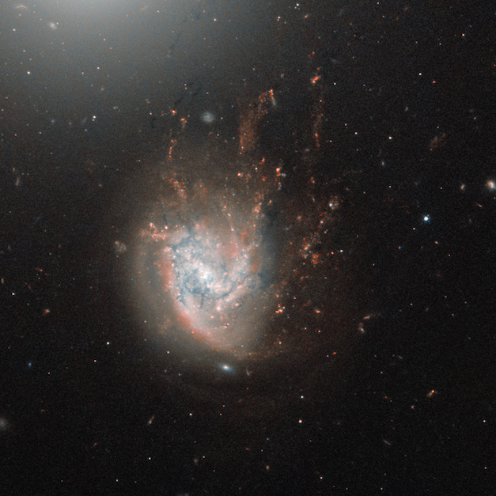
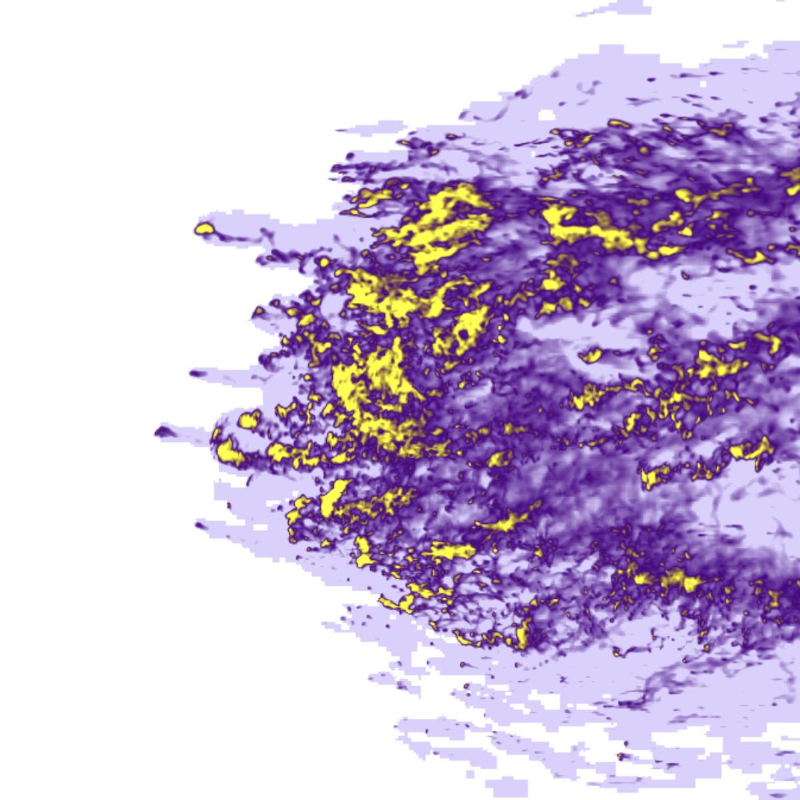

My primary interests in research include galaxy evolution and morpholgy, exploring and interpreting large datasets, and interesting astrophysical phenomena, such as the ram pressure stripping of galaxies.
Ram Pressure Stripping
Galaxies traveling through a galaxy cluster will experience ram pressure as they pass through the intracluster medium. Being that a galaxy is made up of a multi-component medium (including stars, gas, dust, and dark matter), these different components will be affected differently. Stars feel effectively no pressure, but gaseous components, being more diffuse in nature, can be accelerated away from the galaxy disk. In strong cases, this manifests as a stripped gas tail behind a galaxy, which can sometimes be a site of star formation. The most extreme examples are often deemed "jellyfish galaxies".

This process can be studied with a number of different tracers, but molecular gas, traced by CO(2-1) emission, is my key focus. My data is from the ALMA-JELLY large program, which provides structural and kinematic information for galaxies experiencing extreme RPS. My focus is on galaxies in the Coma cluster, located over 200 million light years away.
Ram pressure stripping is an effect on many different mass scales, including dwarf galaxies passing through the CGM of a host galaxy. By studying the most extreme examples of RPS, we can gain insight into the process on scales where observing and studying the effects are more challenging, especially in lower mass targets.
Hydrodynamical Simulations
Through my work as a predoctoral fellow at the CCA and beyond, I have run and interpreted hydrodynamical simulations (primarily using the Enzo Adaptive Mesh Refinement code). These wind-tunnel simulations have allowed me to study the morphology and dynamics of gas in ram pressure stripped galaxies.

Surface Brightness Profiles
Surface brightness profiles quantify the light of a galaxy as a function of distance from its center. It has a vast multitide of uses, and a significant amount of information about a galaxy's properties and overall structure can be gleaned from even a simple 1-dimensional profile.
I have a lot of experience in the process of extracting profiles from large populations of galaxies. My work has been applied to first the SHELS-F2 field, and then COSMOS galaxies in both HSC (grizy) images, and CLAUDS (u,u*) images. I have refined the 1D profile extraction algorithm in Photutils to better handle masked pixels with minimal loss of computation efficiency, and to not immediately fail if a starting ellipse cannot be found. The extracted profiles are being used by students at Saint Mary's University to understand more about galaxy evolution at the population level.
I have also worked on developing a simulation suite that quantifies the amount of "usable profile" from an extraction, based on deviations of observed profiles of galaxies generated with Sérsic profiles from their "true" profiles. More info can be found on my Code page.
As First-Author
- Souchereau, H., et al. Up, Up, and Away? Quantifying ISM Fallback using Ram Pressure Stripping Simulations ApJ, Submitted
- Souchereau, H., et al. GalPRIME: Automated Quality-Assessed 1-D Light Profile Extraction for Large Galaxy Surveys ApJ, Submitted
- Souchereau, H., et al. ALMA-JELLY I: High Resolution CO(2─1) Observations of Ongoing Ram Pressure Stripping in NGC 4858 Reveal Asymmetrical Gas Tail Formation and Fallback ApJ, Published July 2025
As Co-Author
- Williams, D., et al. The Role of Cluster Environments in Quiescent Galaxy Stellar Halo Assembly ,Submitted
- Keim, M., et al. Kinematic Confirmation of a Remarkable Linear Trail of Galaxies in the NGC 1052 Field, Consistent with Formation in a High-speed Bullet Dwarf Collision ,ApJ, Published August 2025
- Williams, D., et al. The Growth of Galaxy Stellar Haloes over 0.2 ≤ z ≤ 1.1 ,ApJ, Published August 2025
- Dominguez Sanchez, H., et al. Identification of tidal features in deep optical galaxy images with convolutional neural networks ,MNRAS, Published May 2023
- Damjanov, I., et al. Quiescent Galaxy Size and Spectroscopic Evolution: Combining HSC Imaging and Hectospec Spectroscopy ,ApJ, Published February 2019